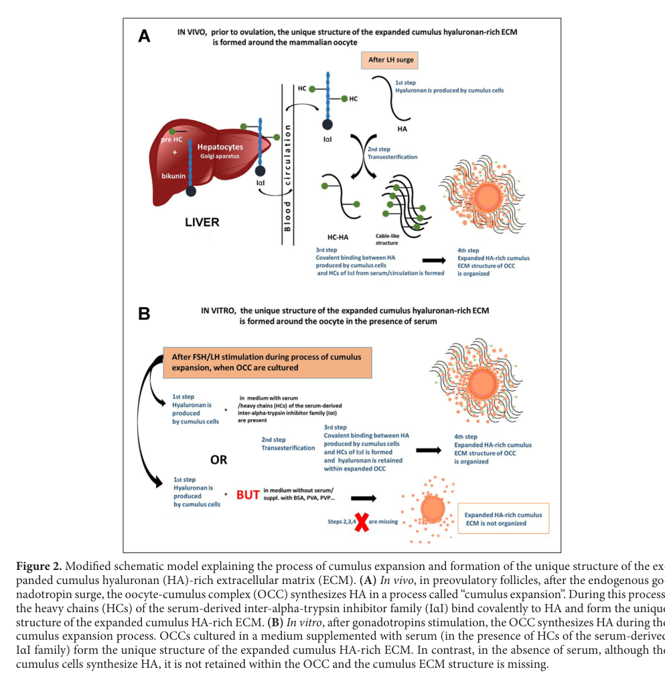

Inter-alpha-trypsin inhibitor heavy chain H2 is a secreted plasma protein that is a component of the inter-alpha-inhibitor (IαI) protease inhibitor complex. ITIH2 acts as a carrier and regulatory protein for hyaluronan in the extracellular matrix, participating in ECM stabilization through TSG-6-mediated transfer of heavy chains to hyaluronan. The protein contains VIT and VWFA domains, is linked to bikunin via chondroitin sulfate, and is phosphorylated by FAM20C in the extracellular space.
| GO Term | Evidence | Action | Reason |
|---|---|---|---|
|
GO:0004867
serine-type endopeptidase inhibitor activity
|
IEA
GO_REF:0000120 |
REMOVE |
Summary: This IEA annotation is based on InterPro domain mapping and UniProtKB keyword assignment. While ITIH2 is part of the inter-alpha-inhibitor complex, the actual serine protease inhibitor activity resides in the bikunin subunit, not in the ITIH2 heavy chain itself.
Reason: ITIH2 (the heavy chain H2) does not possess intrinsic serine-type endopeptidase inhibitor activity. The inhibitory activity of the inter-alpha-inhibitor complex comes from the bikunin light chain, not from the heavy chains. As stated in PMID:2476436, "each protein contained a single, identical, trypsin-inhibitory chain of 30,000 Da" referring to bikunin, while "Inter-alpha-trypsin inhibitor contains noninhibitory heavy chains of 65,000 and 70,000 Da." ITIH2 is one of these noninhibitory heavy chains. The deep research confirms "ITIH2 acts as a serine-type endopeptidase inhibitor" is misleading - it's the bikunin component that has this activity.
Supporting Evidence:
PMID:2476436
Analysis of the proteins, the separated chains, and proteolytic derivatives thereof revealed that each protein contained a single, identical, trypsin-inhibitory chain of 30,000 Da. Inter-alpha-trypsin inhibitor contains noninhibitory heavy chains of 65,000 and 70,000 Da
file:human/ITIH2/ITIH2-deep-research-falcon.md
protease inhibition is primarily attributed to bikunin, while the best-characterized function of heavy chains (including ITIH2/HC2) is structural, namely covalent modification of HA in extracellular matrices
|
|
GO:0005576
extracellular region
|
IEA
GO_REF:0000044 |
ACCEPT |
Summary: This IEA annotation is based on UniProtKB subcellular location vocabulary mapping. ITIH2 is indeed a secreted protein found in plasma and extracellular fluids. However, this term is very broad and less informative than more specific cellular component annotations available.
Reason: While this annotation is correct, it is quite general. ITIH2 is secreted into plasma and the extracellular space as confirmed by UniProt ("Secreted") and deep research showing it is a "secreted plasma protein found in the extracellular space." The annotation is supported by experimental evidence (PMID:14718574) which identified ITIH2 in the human plasma proteome. This term is acceptable as a broad localization statement, though more specific terms like "extracellular matrix" provide better functional context.
Supporting Evidence:
PMID:14718574
The human plasma proteome: a nonredundant list developed by combination of four separate sources
|
|
GO:0030212
hyaluronan metabolic process
|
IEA
GO_REF:0000002 |
ACCEPT |
Summary: This IEA annotation is based on InterPro domain mapping. ITIH2 plays a crucial role in hyaluronan biology through TSG-6-mediated transfer of heavy chains to hyaluronan, stabilizing the ECM and regulating hyaluronan localization and interactions.
Reason: This annotation accurately captures a core function of ITIH2. The protein is directly involved in hyaluronan metabolic processes through its interactions with hyaluronan. PMID:20463016 demonstrates that "TSG-6/HC2 transfer HCs from bikunin proteins to HA" and shows "a dynamic shuffling of the HCs occur in vivo" between glycosaminoglycans including hyaluronan. The deep research confirms ITIH2 "binds and stabilizes hyaluronan in the ECM" and is "covalently linking to hyaluronan, mediated by TSG-6." UniProt states ITIH2 may act as "a binding protein between hyaluronan and other matrix protein...to regulate the localization, synthesis and degradation of hyaluronan."
Supporting Evidence:
PMID:20463016
The heavy chain (HC) subunits of the bikunin proteins are covalently attached to a single chondroitin sulfate (CS) chain originating from bikunin and can be transferred to different hyaluronan (HA) molecules by TSG-6/HC2
file:human/ITIH2/ITIH2-uniprot.txt
May act as a carrier of hyaluronan in serum or as a binding protein between hyaluronan and other matrix protein, including those on cell surfaces in tissues to regulate the localization, synthesis and degradation of hyaluronan
PMID:39149600
TSG-6 is essential for the interaction with HA because it facilitates two following ester exchange reactions: it binds HC1 or HC2 of IαI family covalently and then moves them to the HA fraction in this complex, where the heavy chain conjugates and releases free TSG-6
|
|
GO:0030414
peptidase inhibitor activity
|
IEA
GO_REF:0000043 |
REMOVE |
Summary: This IEA annotation is based on UniProtKB keyword mapping. Like GO:0004867, this annotation incorrectly attributes the protease inhibitor activity of the inter-alpha-inhibitor complex to the ITIH2 heavy chain, when it actually resides in the bikunin subunit.
Reason: ITIH2 itself does not have peptidase inhibitor activity. This is the same fundamental issue as GO:0004867. The heavy chains (including ITIH2/HC2) are structural components that are linked to bikunin via chondroitin sulfate, but they do not possess enzymatic inhibitor activity. PMID:2476436 clearly identifies bikunin as "the trypsin-inhibitory chain" while describing ITIH2 and other heavy chains as "noninhibitory." The annotation conflates the complex's activity with ITIH2's individual molecular function.
Supporting Evidence:
PMID:2476436
Inter-alpha-trypsin inhibitor contains noninhibitory heavy chains of 65,000 and 70,000 Da
file:human/ITIH2/ITIH2-deep-research-falcon.md
This is not an enzyme in the classical "substrate → product" sense; rather, ITIH2 contributes a reactive heavy chain that becomes part of the HA polymer's covalent decoration
|
|
GO:0005515
protein binding
|
IPI
PMID:16873769 TSG-6 potentiates the antitissue kallikrein activity of inte... |
MODIFY |
Summary: This IPI annotation is based on experimental evidence showing ITIH2 interaction with bikunin in the context of TSG-6-mediated complex formation. While technically correct, the generic "protein binding" term is uninformative and should be replaced with more specific molecular function terms.
Reason: PMID:16873769 demonstrates that TSG-6 interacts with heavy chains from inter-alpha-inhibitor, stating "TSG-6 forms covalent complexes with heavy chains (HCs) from inter-alpha-inhibitor and pre-alpha-inhibitor and associates noncovalently with their common bikunin chain." While this confirms protein-protein interaction, the term "protein binding" is too vague per curation guidelines. ITIH2's role is better captured by more specific terms describing its function in hyaluronan binding and ECM organization rather than generic protein binding.
Proposed replacements:
hyaluronic acid binding
Supporting Evidence:
PMID:16873769
TSG-6 (the protein product of TNF-stimulated gene-6), an inflammation-associated protein, forms covalent complexes with heavy chains (HCs) from inter-alpha-inhibitor and pre-alpha-inhibitor and associates noncovalently with their common bikunin chain
|
|
GO:0005515
protein binding
|
IPI
PMID:20463016 The TSG-6/HC2-mediated transfer is a dynamic process shuffli... |
MODIFY |
Summary: This IPI annotation is based on experimental evidence showing ITIH2 interaction with TSG-6 and involvement in the dynamic transfer of heavy chains between glycosaminoglycans. Like the previous protein binding annotation, this is too generic.
Reason: PMID:20463016 demonstrates extensive protein-protein interactions in the context of TSG-6/HC2-mediated transfer, showing "TSG-6 and HC2 transfer HCs from bikunin proteins to HA in a reaction that involves two sequential transesterifications." While protein binding is occurring, this generic term does not capture the specific molecular function. The paper demonstrates hyaluronan binding activity and dynamic interactions with glycosaminoglycans, which are better represented by GO:0005540 (hyaluronic acid binding).
Proposed replacements:
hyaluronic acid binding
Supporting Evidence:
PMID:20463016
In concert, TSG-6 and HC2 transfer HCs from bikunin proteins to HA in a reaction that involves two sequential transesterifications
|
|
GO:0005540
hyaluronic acid binding
|
IDA
PMID:20463016 The TSG-6/HC2-mediated transfer is a dynamic process shuffli... |
ACCEPT |
Summary: This IDA annotation is based on direct experimental evidence demonstrating ITIH2's ability to bind hyaluronan through TSG-6-mediated transfer reactions. This represents a core molecular function of ITIH2.
Reason: This annotation accurately captures a core molecular function of ITIH2. PMID:20463016 directly demonstrates that "heavy chain (HC) subunits of the bikunin proteins...can be transferred to different hyaluronan (HA) molecules by TSG-6/HC2" and shows "HC·HA complex" formation. The paper demonstrates reversible binding, showing "HCs transferred to HA may function as HC donors in subsequent transfer reactions" and "a dynamic shuffling of the HCs occur in vivo." The deep research confirms "ITIH2 binds and stabilizes hyaluronan in the ECM, often via TSG-6-mediated transfer." This is a well-supported, specific molecular function annotation.
Supporting Evidence:
PMID:20463016
The heavy chain (HC) subunits of the bikunin proteins are covalently attached to a single chondroitin sulfate (CS) chain originating from bikunin and can be transferred to different hyaluronan (HA) molecules by TSG-6/HC2
file:human/ITIH2/ITIH2-deep-research-perplexity-lite.md
ITIH2 binds and stabilizes hyaluronan in the ECM, often via TSG-6-mediated transfer
PMID:39149600
HCs have been found to function as structural proteins that can directly cross-link HA that is secreted
file:human/ITIH2/ITIH2-deep-research-falcon.md
ITIH2's primary molecular function is best summarized as: Extracellular structural modification of hyaluronan (HA) through the provision of HC2, which can become covalently attached to HA to form HC·HA (SHAP–HA) complexes that stabilize and organize HA-rich extracellular matrices
|
|
GO:0031012
extracellular matrix
|
HDA
PMID:28327460 Comprehensive proteomic characterization of stem cell-derive... |
ACCEPT |
Summary: This HDA annotation is based on high-throughput detection in extracellular matrix preparations from stem cell-derived matrices. ITIH2 is a bona fide ECM component through its role in stabilizing hyaluronan.
Reason: ITIH2 is a well-established component of the extracellular matrix. The deep research confirms "ITIH2 participates in ECM stabilization by covalently linking to hyaluronan, mediated by TSG-6" and describes it as involved in "ECM stabilization." UniProt states ITIH2 may act as "a binding protein between hyaluronan and other matrix protein." The HDA evidence from proteomics studies of ECM is appropriate for this localization, as ITIH2 functions in the ECM compartment through its interactions with hyaluronan and other matrix components.
Supporting Evidence:
file:human/ITIH2/ITIH2-deep-research-perplexity-lite.md
ITIH2 participates in ECM stabilization by covalently linking to hyaluronan, mediated by TSG-6
PMID:28327460
Epub 2017 Mar 7. Comprehensive proteomic characterization of stem cell-derived extracellular matrices.
PMID:39149600
Through the formation of covalent connections with hyaluronic acid (HA), the inter-α-trypsin inhibitor (IαI) family collaborates to preserve the stability of the extracellular matrix (ECM)
|
|
GO:0031012
extracellular matrix
|
HDA
PMID:28675934 Characterization of the Extracellular Matrix of Normal and D... |
ACCEPT |
Summary: This HDA annotation is based on proteomic characterization of normal and diseased tissue ECM. This is consistent with ITIH2's role as an ECM-stabilizing protein.
Reason: This is the same cellular component as the previous annotation but from a different proteomic study. The evidence supports ITIH2's localization to the extracellular matrix. Multiple independent HDA studies identifying ITIH2 in ECM preparations strengthens confidence in this localization annotation.
Supporting Evidence:
file:human/ITIH2/ITIH2-deep-research-perplexity-lite.md
ITIH2 is a secreted plasma protein found in the extracellular space, especially in tissues rich in ECM
PMID:28675934
Characterization of the Extracellular Matrix of Normal and Diseased Tissues Using Proteomics.
|
|
GO:0031012
extracellular matrix
|
HDA
PMID:25037231 Extracellular matrix signatures of human primary metastatic ... |
ACCEPT |
Summary: This HDA annotation is from a study of ECM signatures in colon cancer and liver metastases. ITIH2 downregulation in cancer is consistent with its tumor suppressor role.
Reason: This annotation from ECM proteomic analysis of cancer tissues is valid. The deep research notes "ITIH2 is downregulated in multiple solid tumors (breast, colon, lung), correlating with loss of tumor suppressor activity and increased invasiveness." The identification of ITIH2 in ECM preparations from cancer tissues, even if at altered levels, confirms its ECM localization and is consistent with its biological role.
Supporting Evidence:
file:human/ITIH2/ITIH2-deep-research-perplexity-lite.md
ITIH2 is downregulated in multiple solid tumors (breast, colon, lung), correlating with loss of tumor suppressor activity and increased invasiveness
PMID:25037231
Extracellular matrix signatures of human primary metastatic colon cancers and their metastases to liver.
PMID:39149600
Strong evidence suggests that genes in the ITIH family may be tumor suppressors because these genes are highly down-regulated in a range of human solid tumors, including lung cancer, breast cancer and colon cancer
|
|
GO:0005788
endoplasmic reticulum lumen
|
TAS
Reactome:R-HSA-8952289 |
REMOVE |
Summary: This TAS annotation is based on Reactome pathway annotation for FAM20C phosphorylation of substrates. While ITIH2 is phosphorylated by FAM20C, this kinase is an extracellular kinase, not an ER-localized one.
Reason: This annotation appears to be incorrect. The Reactome pathway R-HSA-8952289 describes "FAM20C phosphorylates FAM20C substrates" and notes that "Extracellular serine/threonine protein kinase FAM20C is an extracellular kinase." UniProt confirms ITIH2 is "Phosphorylated by FAM20C in the extracellular medium." ITIH2 is a secreted protein that functions in the extracellular space and is phosphorylated there, not in the ER lumen. While ITIH2 transiently passes through the ER during secretion, annotation to ER lumen does not represent a functionally relevant localization for this mature, secreted protein.
Supporting Evidence:
Reactome:R-HSA-8952289
Extracellular serine/threonine protein kinase FAM20C is an extracellular kinase that can phosphorylate a broad range of secreted protein
file:human/ITIH2/ITIH2-uniprot.txt
Phosphorylated by FAM20C in the extracellular medium
|
|
GO:0070062
extracellular exosome
|
HDA
PMID:23533145 In-depth proteomic analyses of exosomes isolated from expres... |
KEEP AS NON CORE |
Summary: This HDA annotation is based on proteomic analysis of exosomes from prostatic secretions. While ITIH2 was detected in these preparations, this likely represents contamination with abundant plasma proteins rather than specific exosomal localization.
Reason: ITIH2 is an abundant plasma protein, and its detection in exosome preparations may reflect plasma contamination rather than bona fide exosomal localization. Exosomes are secreted in biological fluids that also contain plasma proteins, making it difficult to distinguish true exosomal components from co-purifying plasma proteins in HDA studies. While ITIH2 may be present in exosomal fractions, this does not represent a core functional localization. The primary and functionally relevant localization of ITIH2 is in plasma and the ECM where it stabilizes hyaluronan. This annotation should be kept but marked as non-core.
Supporting Evidence:
file:human/ITIH2/ITIH2-deep-research-perplexity-lite.md
ITIH2 is a secreted plasma protein found in the extracellular space
PMID:23533145
2013 Apr 23. In-depth proteomic analyses of exosomes isolated from expressed prostatic secretions in urine.
|
|
GO:0072562
blood microparticle
|
HDA
PMID:22516433 Proteomic analysis of microvesicles from plasma of healthy d... |
KEEP AS NON CORE |
Summary: This HDA annotation is from proteomic analysis of blood microparticles. Similar to exosomal annotations, this likely reflects the presence of abundant plasma proteins rather than specific microparticle association.
Reason: ITIH2 is a major plasma protein present at high concentrations in blood. Detection in blood microparticle preparations likely reflects the plasma milieu in which these particles exist rather than specific functional association with microparticles. The title of PMID:22516433 indicates "high individual variability" in the proteomic analysis, suggesting some non-specific associations. While this annotation may be technically correct, it does not represent a core functional localization for ITIH2, whose primary functions are in plasma and ECM.
Supporting Evidence:
file:human/ITIH2/ITIH2-uniprot.txt
Plasma [tissue specificity]
PMID:22516433
Epub 2012 Apr 10. Proteomic analysis of microvesicles from plasma of healthy donors reveals high individual variability.
|
|
GO:0070062
extracellular exosome
|
HDA
PMID:20458337 MHC class II-associated proteins in B-cell exosomes and pote... |
KEEP AS NON CORE |
Summary: This is another HDA annotation for extracellular exosome from a different study (B-cell exosomes). The same concerns about plasma protein contamination apply.
Reason: This is the same issue as the previous exosomal annotation but from a different study. PMID:20458337 analyzed "MHC class II-associated proteins in B-cell exosomes." While ITIH2 was detected, as an abundant plasma protein, it likely represents contamination rather than specific functional association with B-cell exosomes. The core functions of ITIH2 relate to ECM stabilization and hyaluronan binding, not exosome biology. Keep as non-core.
Supporting Evidence:
file:human/ITIH2/ITIH2-deep-research-perplexity-lite.md
ITIH2 is a secreted plasma protein found in the extracellular space
PMID:20458337
2010 May 11. MHC class II-associated proteins in B-cell exosomes and potential functional implications for exosome biogenesis.
|
|
GO:0005576
extracellular region
|
NAS
PMID:14718574 The human plasma proteome: a nonredundant list developed by ... |
ACCEPT |
Summary: This NAS annotation is based on the plasma proteome study. This is a duplicate of the earlier GO:0005576 annotation but with experimental evidence (NAS) rather than IEA.
Reason: This annotation is correct and supported by direct experimental evidence. PMID:14718574 identified ITIH2 in "The human plasma proteome" through multiple methodologies. This provides stronger evidence than the IEA annotation for the same term. ITIH2 is indeed located in the extracellular region (plasma and ECM). While this term is broad, it is accurate and well-supported by this proteomics study.
Supporting Evidence:
PMID:14718574
The human plasma proteome: a nonredundant list developed by combination of four separate sources
|
|
GO:0004866
endopeptidase inhibitor activity
|
TAS
PMID:2476436 Analysis of inter-alpha-trypsin inhibitor and a novel trypsi... |
REMOVE |
Summary: This TAS annotation is from a traceable author statement in PMID:2476436. However, like the IEA annotations for protease inhibitor activity, this incorrectly attributes the inhibitory activity of the complex to the ITIH2 heavy chain.
Reason: While PMID:2476436 is a foundational paper on inter-alpha-inhibitor structure, the endopeptidase inhibitor activity resides in bikunin, not ITIH2. The paper explicitly states "Analysis of the proteins, the separated chains, and proteolytic derivatives thereof revealed that each protein contained a single, identical, trypsin-inhibitory chain of 30,000 Da" (bikunin) and "Inter-alpha-trypsin inhibitor contains noninhibitory heavy chains of 65,000 and 70,000 Da." This annotation conflates the complex's activity with ITIH2's individual function. ITIH2 is a structural component that does not possess intrinsic endopeptidase inhibitor activity.
Supporting Evidence:
PMID:2476436
Inter-alpha-trypsin inhibitor contains noninhibitory heavy chains of 65,000 and 70,000 Da, whereas pre-alpha-trypsin inhibitor contains a heavy chain of 90,000 Da
|
The research report should be a detailed narrative explaining the function, biological processes, and localization of the gene product. Citations should be given for all claims.
You should prioritize authoritative reviews and primary scientific literature when conducting research. You can supplement
this with annotations you find in gene/protein databases, but these can be outdated or inaccurate.
We are specifically interested in the primary function of the gene - for enzymes, what reaction is catalyzed, and what is the substrate specificity? For transporters, what is the substrate? For structural proteins or adapters, what is the broader structural role? For signaling molecules, what is the role in the pathway.
We are interested in where in or outside the cell the gene product carries out its function.
We are also interested in the signaling or biochemical pathways in which the gene functions. We are less interested in broad pleiotropic effects, except where these elucidate the precise role.
Include evidence where possible. We are interested in both experimental evidence as well as inference from structure, evolution, or bioinformatic analysis. Precise studies should be prioritized over high-throughput, where available.
The literature synthesized here concerns human inter-α-trypsin inhibitor heavy chain H2 (ITIH2; “HC2”), a secreted plasma heavy chain in the inter-α-inhibitor (IαI) family that participates in covalent heavy-chain transfer to hyaluronan (HA) (also described as SHAP/HC•HA). This matches the UniProt identity given (P19823; Homo sapiens; ITIH family) and is distinct from other HA-binding receptors (e.g., CD44) or unrelated genes with similar acronyms. (zhang2024thefunctionof pages 1-2, xu2024hyaluronicacidinteracting pages 6-7)
The IαI family comprises serum-derived complexes built from a light chain (bikunin) plus heavy chains (including HC2/ITIH2). Hepatocytes are a major source of these complexes, which circulate at high concentration. (zhang2024thefunctionof pages 1-2, nagyova2024uniquehyaluronanstructure pages 2-4)
A key conceptual point is that protease inhibition is primarily attributed to bikunin, while the best-characterized function of heavy chains (including ITIH2/HC2) is structural, namely covalent modification of HA in extracellular matrices; this is why heavy chains are termed “serum-derived hyaluronan-associated proteins (SHAP)” once transferred onto HA. (xu2024hyaluronicacidinteracting pages 6-7)
HC•HA refers to hyaluronan covalently modified with IαI heavy chains, forming HA/protein assemblies that can change HA’s organization and biological effects in the extracellular matrix. HC•HA formation is widely used to explain how HA acquires distinct architectures and functions in physiology and disease. (day2024hyaluronan‐proteininteractionslilliput pages 15-15, xu2024hyaluronicacidinteracting pages 6-7)
The TNF-stimulated gene-6 protein (TSG-6 / TNFAIP6) is central to HC transfer. It catalyzes heavy-chain movement from IαI-like donors onto HA via sequential ester-exchange (transesterification) reactions, involving temporary covalent heavy-chain–TSG-6 intermediates. (zhang2024thefunctionof pages 1-2, day2024hyaluronan‐proteininteractionslilliput pages 15-15)
Across current authoritative sources, ITIH2’s primary molecular function is best summarized as:
- Extracellular structural modification of hyaluronan (HA) through the provision of HC2, which can become covalently attached to HA to form HC•HA (SHAP–HA) complexes that stabilize and organize HA-rich extracellular matrices. (zhang2024thefunctionof pages 1-2, xu2024hyaluronicacidinteracting pages 6-7, nagyova2024uniquehyaluronanstructure pages 2-4)
This is not an enzyme in the classical “substrate → product” sense; rather, ITIH2 contributes a reactive heavy chain that becomes part of the HA polymer’s covalent decoration.
Mechanistic descriptions converge on the following model:
1. IαI-like complexes deliver HC2 (and other HCs) to tissues. (zhang2024thefunctionof pages 1-2, nagyova2024uniquehyaluronanstructure pages 2-4)
2. TSG-6 forms a covalent intermediate with HC2 (HC2•TSG-6) and then transfers HC2 onto HA, releasing free TSG-6. (zhang2024thefunctionof pages 1-2, day2024hyaluronan‐proteininteractionslilliput pages 15-15)
3. This transfer requires a sufficiently long HA acceptor; a key mechanistic parameter reported is that the minimum even-length HA oligomer that can accept an HC is an octasaccharide (HA8), with certain chemical modifications enabling shorter oligomers to serve as substrates. (day2024hyaluronan‐proteininteractionslilliput pages 15-15)
In the cancer/HA-interaction literature, this is additionally described as a transesterification reaction in which TSG-6 and HA form a stable complex and heavy-chain transfer is promoted with assistance by calcium ions. (xu2024hyaluronicacidinteracting pages 6-7)
A notable recent mechanistic refinement is that, after HC•HA forms, heavy chains can be re-distributed (“shuffled”) between HA molecules or transferred back onto the bikunin chondroitin sulfate (CS) chain to form higher-molecular-weight IαI species; this implies dynamic extracellular remodeling rather than a single terminal state. (day2024hyaluronan‐proteininteractionslilliput pages 16-17)
Moreover, in arthritis synovial fluid, HC2 can be proteolytically cleaved from HC•HA by proteases (e.g., ADAMTS5 and MMP7), suggesting that proteolytic ‘editing’ can alter the composition—and potentially the bioactivity—of HC•HA matrices. (day2024hyaluronan‐proteininteractionslilliput pages 16-17)
The functional model is strongly extracellular:
- Production: IαI family proteins are synthesized/assembled in liver (hepatocyte-centric framing) and secreted into blood/plasma. (zhang2024thefunctionof pages 1-2, nagyova2024uniquehyaluronanstructure pages 2-4)
- Site of action: Following recruitment to tissues, only the heavy chains (including HC2) are transferred onto locally synthesized HA in the extracellular matrix to generate HC•HA structures. (zhang2024thefunctionof pages 1-2, nagyova2024uniquehyaluronanstructure pages 2-4)
These descriptions align with ITIH2 being a secreted precursor protein whose main function is executed outside cells in HA-rich ECM.
Reproductive biology (cumulus expansion/ovulation): A particularly well-defined context is the expanded oocyte–cumulus extracellular matrix (ECM) in preovulatory follicles, where serum-derived heavy chains covalently bind HA and stabilize the HA-rich matrix essential for ovulation and fertilization. (nagyova2024uniquehyaluronanstructure pages 1-2, nagyova2024uniquehyaluronanstructure pages 2-4)
A schematic figure in a 2024 review illustrates the in vivo path: liver synthesis → circulation → follicle → covalent HC–HA formation, and also shows that serum is required in vitro to retain/stabilize HA matrices around oocyte–cumulus complexes. (nagyova2024uniquehyaluronanstructure media fa68c96c)
Day (2024) consolidates newer mechanistic details for TSG-6-mediated HC transfer, including the HC•TSG-6 covalent intermediates and the HA octasaccharide minimum acceptor size for HC transfer, plus discussion of how chemical modification can change acceptor competence. (day2024hyaluronan‐proteininteractionslilliput pages 15-15)
A 2024 Frontiers in Medicine review compiles disease associations for ITIH2 and related ITIH family members, emphasizing ECM stabilization mechanisms and presenting several quantitative biomarker-performance statistics (see Section 6). While much of this is secondary synthesis, it is a useful map of clinical directions and hypotheses being emphasized in 2024. (zhang2024thefunctionof pages 1-2, zhang2024thefunctionof pages 5-6)
In a 2024 Reproductive Sciences study, human follicular fluid proteomics (IVF/ICSI context) reported ITIH2 among proteins upregulated in follicles associated with higher-quality day-3 embryos, consistent with a role for ITIH2/HC2 in follicular/cumulus matrix biology and oocyte developmental competence. (ji2024aproteomicanalysis pages 3-6)
The most defensible “pathway” annotation for ITIH2 is the TSG-6–mediated HA remodeling axis:
- ITIH2 supplies HC2
- TSG-6 catalyzes HC transfer onto HA
- resulting HC•HA matrices alter ECM mechanics and HA-dependent receptor functions.
This is explicitly linked to ECM stability and to HA structural regulation in multiple 2024 reviews. (zhang2024thefunctionof pages 1-2, xu2024hyaluronicacidinteracting pages 6-7, day2024hyaluronan‐proteininteractionslilliput pages 15-15)
The 2024 disease-focused review reports that ITIH2 is associated with phenotypes such as increased intercellular adhesion, suppressed proliferation, and reduced glioblastoma invasion, and proposes decreased PI3K/AKT signaling activity as a mechanism in that context. This should be treated as a disease-context hypothesis rather than ITIH2’s primary biochemical function. (zhang2024thefunctionof pages 3-5, zhang2024thefunctionof pages 5-6)
Human follicular-fluid proteomics has been used to develop candidate biomarkers of embryo quality beyond morphology. In the 2024 Ji et al. study:
- 22 follicular fluid samples (hqFF n=11 vs nhqFF n=11)
- 558 proteins identified
- 50 differentially expressed proteins (32 upregulated, 18 downregulated)
- DEPs called at >1.20-fold or <0.67-fold with P<0.05 thresholds
ITIH2 is reported among the proteins upregulated in the high-quality embryo group, suggesting potential use in noninvasive biomarker strategies. (ji2024aproteomicanalysis pages 3-6)
In a maternal plasma proteomics study of early- vs late-onset preeclampsia, ITIH2 was confirmed perturbed only in late-onset preeclampsia (LOPE) in validation, providing a concrete example of ITIH2 being used in proteomic signatures to distinguish disease phenotypes. (chen2022maternalplasmaproteome pages 5-6)
In related platelet/plasma multi-omics work, ITIH2 (with ITIH3) is discussed as a likely mediator/marker of thrombo-inflammation in gestational hypertension and preeclampsia—another real-world setting where ITIH2 enters biomarker panels and mechanistic hypotheses in pregnancy complications. (almeida2022proteomicsandmetabolomics pages 1-2)
The 2024 review by Zhang et al. compiles multiple proposed diagnostic applications for ITIH2 in diverse diseases, including ROC/AUC-based performance in some settings. This indicates broad exploration of ITIH2 as a circulating protein biomarker, but also highlights a limitation: different diseases may perturb the same heavy chain, constraining specificity. (zhang2024thefunctionof pages 5-6)
Key quantitative findings available in the retrieved sources include:
- Serum concentration of IαI family proteins: ~0.15–0.5 mg/mL in blood (reported in a 2024 review), consistent with their role as abundant plasma-derived ECM modifiers. (zhang2024thefunctionof pages 1-2)
- Mechanistic constraint on HA acceptor size: minimum even-length HA oligomer to accept HC transfer is octasaccharide. (day2024hyaluronan‐proteininteractionslilliput pages 15-15)
- Follicular fluid proteomics (2024): n=22 FF samples (11 vs 11); 558 proteins; 50 DEPs; thresholds as above; ITIH2 upregulated in the high-quality embryo group. (ji2024aproteomicanalysis pages 3-6)
- Late-onset preeclampsia validation (2022): ITIH2 validation logFC 0.37228745, p=0.005, with discovery table FDR 0.03. (chen2022maternalplasmaproteome pages 5-6)
- Review-compiled diagnostic performance examples (2024): pancreatic cancer diagnostic biomarker AUC 0.947; osteoarticular tuberculosis AUC 0.7167 (95% CI 0.5846–0.8487). (zhang2024thefunctionof pages 5-6)
Across mechanistic and disease-oriented 2024 reviews, there is strong agreement that:
- ITIH2’s heavy chain participates in covalent HA modification (SHAP/HC•HA formation) via TSG-6 catalysis, and this is the best-characterized molecular function of heavy chains. (xu2024hyaluronicacidinteracting pages 6-7, day2024hyaluronan‐proteininteractionslilliput pages 15-15)
- The biological impact of ITIH2 is therefore best understood through ECM physics/architecture and HA receptor biology, rather than through a classical enzymatic active site or transporter substrate profile. (zhang2024thefunctionof pages 1-2, day2024hyaluronan‐proteininteractionslilliput pages 15-15)
Recent reviews also emphasize that important in vivo questions remain open:
- Whether HC “shuffling” among HA chains is beneficial or deleterious in inflammatory disease progression is not yet clearly tested in vivo models (e.g., arthritis). (day2024hyaluronan‐proteininteractionslilliput pages 16-17)
- Proteolytic “editing” (e.g., ADAMTS5/MMP7 cleavage of HC2 from HC•HA) can change bioactivity, but the net physiological consequences require further clarification. (day2024hyaluronan‐proteininteractionslilliput pages 16-17)
OpenTargets lists multiple disease associations for ITIH2 (e.g., non-alcoholic fatty liver disease, neurodegenerative disease, type 2 diabetes mellitus), indicating that genetic and/or functional evidence has been aggregated across diverse indications; these associations should be interpreted as hypothesis-generating rather than a direct statement of ITIH2’s biochemical mechanism. (OpenTargets Search: -ITIH2)
The following table compiles mechanism, localization, and quantitative human findings from recent sources:
| Aspect | Key points | Quantitative/statistical details | Primary source (include DOI URL + year) |
|---|---|---|---|
| ITIH2/HC2 identity in the IαI family | Human ITIH2 encodes heavy chain 2 (HC2) of the inter-α-trypsin inhibitor (IαI) family; hepatocyte-derived serum complexes contain bikunin plus heavy chains, and HC1/HC2 are the major heavy chains in classical human IαI. HC2 is linked to bikunin through a chondroitin sulfate chain and is not the protease-inhibitory moiety; that activity resides in bikunin. (zhang2024thefunctionof pages 1-2, xu2024hyaluronicacidinteracting pages 6-7) | IαI complexes are ~225 kDa and circulate in blood at ~0.15–0.5 mg/mL; serum concentration also reported as ~0.5 mg/mL in reproductive/ECM literature. (zhang2024thefunctionof pages 1-2, nagyova2024uniquehyaluronanstructure pages 2-4) | Zhang et al., 2024, https://doi.org/10.3389/fmed.2024.1432224; Xu et al., 2024, https://doi.org/10.3390/cancers16101907; Nagyova et al., 2024, https://doi.org/10.2478/enr-2024-0020 |
| HC2 transfer to hyaluronan via TSG-6 | HC2 is transferred from IαI to hyaluronan (HA) by TSG-6/TNFAIP6 through sequential ester-exchange/transesterification reactions involving a covalent HC2•TSG-6 intermediate, generating HC•HA (SHAP-HA) complexes that stabilize HA-rich extracellular matrices. Calcium ions assist this process; TSG-6 can act as the catalytic transferase. (zhang2024thefunctionof pages 1-2, xu2024hyaluronicacidinteracting pages 6-7, day2024hyaluronan‐proteininteractionslilliput pages 15-15) | Minimum HA acceptor length for HC transfer is an octasaccharide; chemically modified HA tetra- and hexa-saccharides can also become substrates in some settings. Expected HC1 and HC2 transfer can be approximately equal depending on which HC•TSG-6 intermediate forms. (day2024hyaluronan‐proteininteractionslilliput pages 15-15) | Day, 2024, https://doi.org/10.1002/pgr2.70007; Zhang et al., 2024, https://doi.org/10.3389/fmed.2024.1432224; Xu et al., 2024, https://doi.org/10.3390/cancers16101907 |
| Localization | ITIH2/HC2 is produced mainly in liver, secreted into plasma as part of IαI, then functions extracellularly after transfer onto locally synthesized HA in tissues/ECM. HC2-containing HC•HA complexes are found in extracellular matrices and can be remodeled post-synthetically by proteolysis. (zhang2024thefunctionof pages 1-2, day2024hyaluronan‐proteininteractionslilliput pages 16-17, nagyova2024uniquehyaluronanstructure pages 2-4) | Blood concentration of IαI family proteins: ~0.15–0.5 mg/mL or ~0.5 mg/mL depending on source/review context. HC2 can be proteolytically removed from HC•HA by ADAMTS5 and MMP7 in arthritis synovial fluid. (zhang2024thefunctionof pages 1-2, day2024hyaluronan‐proteininteractionslilliput pages 16-17, nagyova2024uniquehyaluronanstructure pages 2-4) | Zhang et al., 2024, https://doi.org/10.3389/fmed.2024.1432224; Day, 2024, https://doi.org/10.1002/pgr2.70007; Nagyova et al., 2024, https://doi.org/10.2478/enr-2024-0020 |
| ECM structural role | The best-established function of HC2 is structural: covalent HA modification/crosslinking that stabilizes extracellular matrix architecture, affects HA organization, and can modulate cell adhesion/rolling through effects on CD44-containing matrices. (zhang2024thefunctionof pages 1-2, xu2024hyaluronicacidinteracting pages 6-7, day2024hyaluronan‐proteininteractionslilliput pages 15-15) | No direct catalytic turnover number reported in provided sources; mechanistic quantitative detail available is HA octasaccharide minimum substrate size for HC transfer. (day2024hyaluronan‐proteininteractionslilliput pages 15-15) | Day, 2024, https://doi.org/10.1002/pgr2.70007; Zhang et al., 2024, https://doi.org/10.3389/fmed.2024.1432224; Xu et al., 2024, https://doi.org/10.3390/cancers16101907 |
| Physiological context: ovulation/cumulus expansion | In preovulatory follicles, serum-derived HC2 (with HC1/HC3) becomes covalently attached to cumulus-cell HA, helping build the expanded HA-rich oocyte-cumulus extracellular matrix required for ovulation and fertilization. This matrix also involves TNFAIP6/TSG-6, PTX3, versican, and bikunin. (nagyova2024uniquehyaluronanstructure pages 1-2, nagyova2024uniquehyaluronanstructure pages 2-4, nagyova2024uniquehyaluronanstructure media fa68c96c) | Mouse OCC proteomics produced >24,000 mass spectra and identified 711 proteins; ITIH1, ITIH2, ITIH3, PTX3, TNFAIP6, VCAN, and VTN were among the seven especially abundant expansion-related components. At least 34 bikunin target genes were identified in earlier reproductive studies. (nagyova2024uniquehyaluronanstructure pages 2-4) | Nagyova et al., 2024, https://doi.org/10.2478/enr-2024-0020 |
| Figure-supported mechanism | A recent schematic depicts liver synthesis of IαI, circulation to the follicle, and covalent binding of heavy chains to HA in vivo; the in vitro panel shows serum dependence for retaining/stabilizing the HA matrix around the oocyte-cumulus complex. (nagyova2024uniquehyaluronanstructure media fa68c96c) | Qualitative schematic support; no additional numeric statistic in figure extraction. (nagyova2024uniquehyaluronanstructure media fa68c96c) | Nagyova et al., 2024, https://doi.org/10.2478/enr-2024-0020 |
| Human reproductive biomarker/proteomics finding (2024) | In human follicular fluid from IVF/ICSI patients, ITIH2 was among proteins upregulated in follicles yielding higher-quality day-3 embryos, consistent with a role in HA-rich cumulus/follicular matrix biology. (ji2024aproteomicanalysis pages 3-6) | Study analyzed 22 follicular-fluid samples from 19 women; 558 proteins identified; 50 differentially expressed proteins total (32 upregulated, 18 downregulated) using >1.20-fold or <0.67-fold and P<0.05 thresholds. ITIH2 was reported as upregulated in the high-quality embryo group. (ji2024aproteomicanalysis pages 3-6) | Ji et al., 2024, https://doi.org/10.1007/s43032-023-01293-x |
| Human pregnancy biomarker finding (LOPE) | Maternal plasma proteomics found ITIH2 perturbed specifically in late-onset preeclampsia (LOPE), not early-onset preeclampsia in validation, supporting disease-context-specific regulation. (chen2022maternalplasmaproteome pages 5-6) | Validation logFC for ITIH2 in LOPE vs healthy pregnancy: 0.37228745; FDR in discovery table: 0.03; validation p=0.005. (chen2022maternalplasmaproteome pages 5-6) | Chen et al., 2022, https://doi.org/10.1038/s41598-022-20658-x |
| Human thrombo-inflammation association | Plasma/platelet multi-omics in gestational hypertension and preeclampsia implicated ITIH2 (with ITIH3) as likely mediators of thrombo-inflammation rather than simple background markers. (almeida2022proteomicsandmetabolomics pages 1-2) | Clinical context statistic: preeclampsia complicates up to 8% of pregnancies; diagnostic thresholds noted as >140/90 mmHg and proteinuria ≥300 mg/24 h. Specific ITIH2 fold-change was not given in the excerpt. (almeida2022proteomicsandmetabolomics pages 1-2) | de Almeida et al., 2022, https://doi.org/10.3390/cells11081256 |
| Disease/biomarker review summary for ITIH2 | Review-level synthesis reports multiple human disease associations for ITIH2, including reduced serum levels in pediatric multiple sclerosis, pancreatic cancer diagnosis, diabetic retinopathy-associated vitreous changes, and osteoarticular tuberculosis diagnosis; these are associations, not proof of primary molecular function. (zhang2024thefunctionof pages 5-6) | Pancreatic cancer vs chronic pancreatitis AUC=0.947; osteoarticular tuberculosis AUC=0.7167 (95% CI 0.5846–0.8487). Breast-cancer estrogen receptor association reported as p=0.001 elsewhere in the review. (zhang2024thefunctionof pages 5-6, zhang2024thefunctionof pages 3-5) | Zhang et al., 2024, https://doi.org/10.3389/fmed.2024.1432224 |
| Cancer-related functional interpretation | ITIH2 is described as increasing intercellular adhesion, suppressing proliferation, and limiting glioblastoma invasion, potentially via reduced PI3K/AKT signaling; this aligns with an ECM-stabilizing/tumor-suppressive interpretation rather than enzyme activity. (zhang2024thefunctionof pages 5-6, zhang2024thefunctionof pages 3-5) | Review cites breast-cancer correlation with estrogen receptor expression at p=0.001; no direct effect size for PI3K/AKT reduction provided in excerpt. (zhang2024thefunctionof pages 5-6, zhang2024thefunctionof pages 3-5) | Zhang et al., 2024, https://doi.org/10.3389/fmed.2024.1432224 |
Table: This table summarizes the core molecular role of human ITIH2/HC2 in the inter-alpha-inhibitor system, its extracellular localization and HA-transfer mechanism, and recent clinical/proteomic findings with quantitative details where available. It is useful as a compact evidence map linking biochemical function to physiological and disease contexts.
A 2024 figure summarizing the liver-to-follicle route and serum dependence of HA–HC matrix formation in cumulus expansion is available here (schematic): (nagyova2024uniquehyaluronanstructure media fa68c96c)
References
(zhang2024thefunctionof pages 1-2): Xin-feng Zhang, Xiao-li Zhang, Li Guo, Yun-ping Bai, Yan Tian, and Hua-you Luo. The function of the inter-alpha-trypsin inhibitors in the development of disease. Frontiers in Medicine, Aug 2024. URL: https://doi.org/10.3389/fmed.2024.1432224, doi:10.3389/fmed.2024.1432224. This article has 37 citations.
(xu2024hyaluronicacidinteracting pages 6-7): Yali Xu, Johannes Benedikt, and Lin Ye. Hyaluronic acid interacting molecules mediated crosstalk between cancer cells and microenvironment from primary tumour to distant metastasis. Cancers, 16:1907, May 2024. URL: https://doi.org/10.3390/cancers16101907, doi:10.3390/cancers16101907. This article has 26 citations.
(nagyova2024uniquehyaluronanstructure pages 2-4): Eva Nagyova, Alzbeta Bujnakova Mlynarcikova, Lucie Nemcova, and Sona Scsukova. Unique hyaluronan structure of expanded oocyte-cumulus extracellular matrix in ovarian follicles. Endocrine Regulations, 58:174-180, Jan 2024. URL: https://doi.org/10.2478/enr-2024-0020, doi:10.2478/enr-2024-0020. This article has 2 citations.
(day2024hyaluronan‐proteininteractionslilliput pages 15-15): Anthony J. Day. Hyaluronan‐protein interactions: lilliput revisited. Proteoglycan Research, Oct 2024. URL: https://doi.org/10.1002/pgr2.70007, doi:10.1002/pgr2.70007. This article has 15 citations.
(day2024hyaluronan‐proteininteractionslilliput pages 16-17): Anthony J. Day. Hyaluronan‐protein interactions: lilliput revisited. Proteoglycan Research, Oct 2024. URL: https://doi.org/10.1002/pgr2.70007, doi:10.1002/pgr2.70007. This article has 15 citations.
(nagyova2024uniquehyaluronanstructure pages 1-2): Eva Nagyova, Alzbeta Bujnakova Mlynarcikova, Lucie Nemcova, and Sona Scsukova. Unique hyaluronan structure of expanded oocyte-cumulus extracellular matrix in ovarian follicles. Endocrine Regulations, 58:174-180, Jan 2024. URL: https://doi.org/10.2478/enr-2024-0020, doi:10.2478/enr-2024-0020. This article has 2 citations.
(nagyova2024uniquehyaluronanstructure media fa68c96c): Eva Nagyova, Alzbeta Bujnakova Mlynarcikova, Lucie Nemcova, and Sona Scsukova. Unique hyaluronan structure of expanded oocyte-cumulus extracellular matrix in ovarian follicles. Endocrine Regulations, 58:174-180, Jan 2024. URL: https://doi.org/10.2478/enr-2024-0020, doi:10.2478/enr-2024-0020. This article has 2 citations.
(zhang2024thefunctionof pages 5-6): Xin-feng Zhang, Xiao-li Zhang, Li Guo, Yun-ping Bai, Yan Tian, and Hua-you Luo. The function of the inter-alpha-trypsin inhibitors in the development of disease. Frontiers in Medicine, Aug 2024. URL: https://doi.org/10.3389/fmed.2024.1432224, doi:10.3389/fmed.2024.1432224. This article has 37 citations.
(ji2024aproteomicanalysis pages 3-6): Jingjuan Ji, Xinyi Zhu, Yan Zhang, Lijun Shui, Shun Bai, Lingli Huang, Haoyu Wang, Shiwei Fan, Zelin Zhang, Li-hua Luo, and Bo Xu. A proteomic analysis of human follicular fluid: proteomic profile associated with embryo quality. Reproductive sciences, 31:199-211, Aug 2024. URL: https://doi.org/10.1007/s43032-023-01293-x, doi:10.1007/s43032-023-01293-x. This article has 4 citations and is from a peer-reviewed journal.
(zhang2024thefunctionof pages 3-5): Xin-feng Zhang, Xiao-li Zhang, Li Guo, Yun-ping Bai, Yan Tian, and Hua-you Luo. The function of the inter-alpha-trypsin inhibitors in the development of disease. Frontiers in Medicine, Aug 2024. URL: https://doi.org/10.3389/fmed.2024.1432224, doi:10.3389/fmed.2024.1432224. This article has 37 citations.
(chen2022maternalplasmaproteome pages 5-6): Hao Chen, Ingrid Aneman, Valentina Nikolic, Natasa Karadzov Orlic, Zeljko Mikovic, Milan Stefanovic, Zoran Cakic, Hristina Jovanovic, Stephanie E. L. Town, Matthew P. Padula, and Lana McClements. Maternal plasma proteome profiling of biomarkers and pathogenic mechanisms of early-onset and late-onset preeclampsia. Scientific Reports, Nov 2022. URL: https://doi.org/10.1038/s41598-022-20658-x, doi:10.1038/s41598-022-20658-x. This article has 40 citations and is from a peer-reviewed journal.
(almeida2022proteomicsandmetabolomics pages 1-2): Luiz Gustavo N. de Almeida, Daniel Young, Lorraine Chow, Joshua Nicholas, Adrienne Lee, Man-Chiu Poon, Antoine Dufour, and Ejaife O. Agbani. Proteomics and metabolomics profiling of platelets and plasma mediators of thrombo-inflammation in gestational hypertension and preeclampsia. Cells, 11:1256, Apr 2022. URL: https://doi.org/10.3390/cells11081256, doi:10.3390/cells11081256. This article has 56 citations.
(OpenTargets Search: -ITIH2): Open Targets Query (-ITIH2, 5 results). Buniello, A. et al. (2025). Open Targets Platform: facilitating therapeutic hypotheses building in drug discovery. Nucleic Acids Research.

The ITIH2 gene encodes the inter-alpha-trypsin inhibitor heavy chain 2, a protein primarily involved in extracellular matrix (ECM) stabilization, with roles in inflammation, tumor suppression, and disease processes[1][5][6].
Molecular Function:
ITIH2 acts as a serine-type endopeptidase inhibitor and binds to hyaluronan, a major ECM component, helping stabilize the matrix and regulate cell migration and tissue integrity[1][6][3]. It is also involved in endopeptidase inhibitor activity[1][9].
Biological Processes:
ITIH2 participates in:
Response to exogenous stressors: ITIH2 is a hub gene in hepatotoxicity models, indicating a role in cellular stress responses[8].
Cellular Localization:
ITIH2 is a secreted plasma protein found in the extracellular space, especially in tissues rich in ECM such as the liver, kidney, and various brain regions[6][7][9]. It is detected in urine, especially in disease states like SLE[4].
Summary:
ITIH2 is a secreted ECM protein with serine protease inhibitor activity, crucial for matrix stabilization, inflammation modulation, and tumor suppression. It contains a Gla domain, interacts with hyaluronan via TSG-6, and is downregulated in several cancers and inflammatory diseases. Recent research highlights its biomarker potential in SLE and its broader role in cellular stress responses.
id: P19823
gene_symbol: ITIH2
product_type: PROTEIN
status: COMPLETE
taxon:
id: NCBITaxon:9606
label: Homo sapiens
description: Inter-alpha-trypsin inhibitor heavy chain H2 is a secreted plasma
protein that is a component of the inter-alpha-inhibitor (IαI) protease
inhibitor complex. ITIH2 acts as a carrier and regulatory protein for
hyaluronan in the extracellular matrix, participating in ECM stabilization
through TSG-6-mediated transfer of heavy chains to hyaluronan. The protein
contains VIT and VWFA domains, is linked to bikunin via chondroitin sulfate,
and is phosphorylated by FAM20C in the extracellular space.
existing_annotations:
- term:
id: GO:0004867
label: serine-type endopeptidase inhibitor activity
evidence_type: IEA
original_reference_id: GO_REF:0000120
review:
summary: This IEA annotation is based on InterPro domain mapping and
UniProtKB keyword assignment. While ITIH2 is part of the
inter-alpha-inhibitor complex, the actual serine protease inhibitor
activity resides in the bikunin subunit, not in the ITIH2 heavy chain
itself.
action: REMOVE
reason: ITIH2 (the heavy chain H2) does not possess intrinsic serine-type
endopeptidase inhibitor activity. The inhibitory activity of the
inter-alpha-inhibitor complex comes from the bikunin light chain, not from
the heavy chains. As stated in PMID:2476436, "each protein contained a
single, identical, trypsin-inhibitory chain of 30,000 Da" referring to
bikunin, while "Inter-alpha-trypsin inhibitor contains noninhibitory heavy
chains of 65,000 and 70,000 Da." ITIH2 is one of these noninhibitory heavy
chains. The deep research confirms "ITIH2 acts as a serine-type
endopeptidase inhibitor" is misleading - it's the bikunin component that
has this activity.
supported_by:
- reference_id: PMID:2476436
supporting_text: "Analysis of the proteins, the separated chains, and proteolytic
derivatives thereof revealed that each protein contained a single, identical,
trypsin-inhibitory chain of 30,000 Da. Inter-alpha-trypsin inhibitor contains
noninhibitory heavy chains of 65,000 and 70,000 Da"
- reference_id: file:human/ITIH2/ITIH2-deep-research-falcon.md
supporting_text: "protease inhibition is primarily attributed to bikunin, while
the best-characterized function of heavy chains (including ITIH2/HC2) is structural,
namely covalent modification of HA in extracellular matrices"
- term:
id: GO:0005576
label: extracellular region
evidence_type: IEA
original_reference_id: GO_REF:0000044
review:
summary: This IEA annotation is based on UniProtKB subcellular location
vocabulary mapping. ITIH2 is indeed a secreted protein found in plasma and
extracellular fluids. However, this term is very broad and less
informative than more specific cellular component annotations available.
action: ACCEPT
reason: While this annotation is correct, it is quite general. ITIH2 is
secreted into plasma and the extracellular space as confirmed by UniProt
("Secreted") and deep research showing it is a "secreted plasma protein
found in the extracellular space." The annotation is supported by
experimental evidence (PMID:14718574) which identified ITIH2 in the human
plasma proteome. This term is acceptable as a broad localization
statement, though more specific terms like "extracellular matrix" provide
better functional context.
supported_by:
- reference_id: PMID:14718574
supporting_text: "The human plasma proteome: a nonredundant list developed by
combination of four separate sources"
- term:
id: GO:0030212
label: hyaluronan metabolic process
evidence_type: IEA
original_reference_id: GO_REF:0000002
review:
summary: This IEA annotation is based on InterPro domain mapping. ITIH2
plays a crucial role in hyaluronan biology through TSG-6-mediated transfer
of heavy chains to hyaluronan, stabilizing the ECM and regulating
hyaluronan localization and interactions.
action: ACCEPT
reason: This annotation accurately captures a core function of ITIH2. The
protein is directly involved in hyaluronan metabolic processes through its
interactions with hyaluronan. PMID:20463016 demonstrates that "TSG-6/HC2
transfer HCs from bikunin proteins to HA" and shows "a dynamic shuffling
of the HCs occur in vivo" between glycosaminoglycans including hyaluronan.
The deep research confirms ITIH2 "binds and stabilizes hyaluronan in the
ECM" and is "covalently linking to hyaluronan, mediated by TSG-6." UniProt
states ITIH2 may act as "a binding protein between hyaluronan and other
matrix protein...to regulate the localization, synthesis and degradation
of hyaluronan."
supported_by:
- reference_id: PMID:20463016
supporting_text: "The heavy chain (HC) subunits of the bikunin proteins are
covalently attached to a single chondroitin sulfate (CS) chain originating
from bikunin and can be transferred to different hyaluronan (HA) molecules
by TSG-6/HC2"
- reference_id: file:human/ITIH2/ITIH2-uniprot.txt
supporting_text: "May act as a carrier of hyaluronan in serum or as a binding
protein between hyaluronan and other matrix protein, including those on cell
surfaces in tissues to regulate the localization, synthesis and degradation
of hyaluronan"
- reference_id: PMID:39149600
supporting_text: "TSG-6 is essential for the interaction with HA because it
facilitates two following ester exchange reactions: it binds HC1 or HC2 of
IαI family covalently and then moves them to the HA fraction in this complex,
where the heavy chain conjugates and releases free TSG-6"
- term:
id: GO:0030414
label: peptidase inhibitor activity
evidence_type: IEA
original_reference_id: GO_REF:0000043
review:
summary: This IEA annotation is based on UniProtKB keyword mapping. Like
GO:0004867, this annotation incorrectly attributes the protease inhibitor
activity of the inter-alpha-inhibitor complex to the ITIH2 heavy chain,
when it actually resides in the bikunin subunit.
action: REMOVE
reason: ITIH2 itself does not have peptidase inhibitor activity. This is the
same fundamental issue as GO:0004867. The heavy chains (including
ITIH2/HC2) are structural components that are linked to bikunin via
chondroitin sulfate, but they do not possess enzymatic inhibitor activity.
PMID:2476436 clearly identifies bikunin as "the trypsin-inhibitory chain"
while describing ITIH2 and other heavy chains as "noninhibitory." The
annotation conflates the complex's activity with ITIH2's individual
molecular function.
supported_by:
- reference_id: PMID:2476436
supporting_text: "Inter-alpha-trypsin inhibitor contains noninhibitory heavy
chains of 65,000 and 70,000 Da"
- reference_id: file:human/ITIH2/ITIH2-deep-research-falcon.md
supporting_text: "This is not an enzyme in the classical \"substrate → product\"
sense; rather, ITIH2 contributes a reactive heavy chain that becomes part
of the HA polymer's covalent decoration"
- term:
id: GO:0005515
label: protein binding
evidence_type: IPI
original_reference_id: PMID:16873769
review:
summary: This IPI annotation is based on experimental evidence showing ITIH2
interaction with bikunin in the context of TSG-6-mediated complex
formation. While technically correct, the generic "protein binding" term
is uninformative and should be replaced with more specific molecular
function terms.
action: MODIFY
reason: PMID:16873769 demonstrates that TSG-6 interacts with heavy chains
from inter-alpha-inhibitor, stating "TSG-6 forms covalent complexes with
heavy chains (HCs) from inter-alpha-inhibitor and pre-alpha-inhibitor and
associates noncovalently with their common bikunin chain." While this
confirms protein-protein interaction, the term "protein binding" is too
vague per curation guidelines. ITIH2's role is better captured by more
specific terms describing its function in hyaluronan binding and ECM
organization rather than generic protein binding.
proposed_replacement_terms:
- id: GO:0005540
label: hyaluronic acid binding
supported_by:
- reference_id: PMID:16873769
supporting_text: "TSG-6 (the protein product of TNF-stimulated gene-6), an inflammation-associated
protein, forms covalent complexes with heavy chains (HCs) from inter-alpha-inhibitor
and pre-alpha-inhibitor and associates noncovalently with their common bikunin
chain"
- term:
id: GO:0005515
label: protein binding
evidence_type: IPI
original_reference_id: PMID:20463016
review:
summary: This IPI annotation is based on experimental evidence showing ITIH2
interaction with TSG-6 and involvement in the dynamic transfer of heavy
chains between glycosaminoglycans. Like the previous protein binding
annotation, this is too generic.
action: MODIFY
reason: PMID:20463016 demonstrates extensive protein-protein interactions in
the context of TSG-6/HC2-mediated transfer, showing "TSG-6 and HC2
transfer HCs from bikunin proteins to HA in a reaction that involves two
sequential transesterifications." While protein binding is occurring, this
generic term does not capture the specific molecular function. The paper
demonstrates hyaluronan binding activity and dynamic interactions with
glycosaminoglycans, which are better represented by GO:0005540 (hyaluronic
acid binding).
proposed_replacement_terms:
- id: GO:0005540
label: hyaluronic acid binding
supported_by:
- reference_id: PMID:20463016
supporting_text: "In concert, TSG-6 and HC2 transfer HCs from bikunin proteins
to HA in a reaction that involves two sequential transesterifications"
- term:
id: GO:0005540
label: hyaluronic acid binding
evidence_type: IDA
original_reference_id: PMID:20463016
review:
summary: This IDA annotation is based on direct experimental evidence
demonstrating ITIH2's ability to bind hyaluronan through TSG-6-mediated
transfer reactions. This represents a core molecular function of ITIH2.
action: ACCEPT
reason: This annotation accurately captures a core molecular function of
ITIH2. PMID:20463016 directly demonstrates that "heavy chain (HC) subunits
of the bikunin proteins...can be transferred to different hyaluronan (HA)
molecules by TSG-6/HC2" and shows "HC·HA complex" formation. The paper
demonstrates reversible binding, showing "HCs transferred to HA may
function as HC donors in subsequent transfer reactions" and "a dynamic
shuffling of the HCs occur in vivo." The deep research confirms "ITIH2
binds and stabilizes hyaluronan in the ECM, often via TSG-6-mediated
transfer." This is a well-supported, specific molecular function
annotation.
supported_by:
- reference_id: PMID:20463016
supporting_text: "The heavy chain (HC) subunits of the bikunin proteins are
covalently attached to a single chondroitin sulfate (CS) chain originating
from bikunin and can be transferred to different hyaluronan (HA) molecules
by TSG-6/HC2"
- reference_id: file:human/ITIH2/ITIH2-deep-research-perplexity-lite.md
supporting_text: "ITIH2 binds and stabilizes hyaluronan in the ECM, often via
TSG-6-mediated transfer"
- reference_id: PMID:39149600
supporting_text: "HCs have been found to function as structural proteins that
can directly cross-link HA that is secreted"
- reference_id: file:human/ITIH2/ITIH2-deep-research-falcon.md
supporting_text: "ITIH2's primary molecular function is best summarized as: Extracellular
structural modification of hyaluronan (HA) through the provision of HC2, which
can become covalently attached to HA to form HC·HA (SHAP–HA) complexes that
stabilize and organize HA-rich extracellular matrices"
- term:
id: GO:0031012
label: extracellular matrix
evidence_type: HDA
original_reference_id: PMID:28327460
review:
summary: This HDA annotation is based on high-throughput detection in
extracellular matrix preparations from stem cell-derived matrices. ITIH2
is a bona fide ECM component through its role in stabilizing hyaluronan.
action: ACCEPT
reason: ITIH2 is a well-established component of the extracellular matrix.
The deep research confirms "ITIH2 participates in ECM stabilization by
covalently linking to hyaluronan, mediated by TSG-6" and describes it as
involved in "ECM stabilization." UniProt states ITIH2 may act as "a
binding protein between hyaluronan and other matrix protein." The HDA
evidence from proteomics studies of ECM is appropriate for this
localization, as ITIH2 functions in the ECM compartment through its
interactions with hyaluronan and other matrix components.
supported_by:
- reference_id: file:human/ITIH2/ITIH2-deep-research-perplexity-lite.md
supporting_text: "ITIH2 participates in ECM stabilization by covalently linking
to hyaluronan, mediated by TSG-6"
- reference_id: PMID:28327460
supporting_text: Epub 2017 Mar 7. Comprehensive proteomic characterization
of stem cell-derived extracellular matrices.
- reference_id: PMID:39149600
supporting_text: "Through the formation of covalent connections with hyaluronic
acid (HA), the inter-α-trypsin inhibitor (IαI) family collaborates to preserve
the stability of the extracellular matrix (ECM)"
- term:
id: GO:0031012
label: extracellular matrix
evidence_type: HDA
original_reference_id: PMID:28675934
review:
summary: This HDA annotation is based on proteomic characterization of
normal and diseased tissue ECM. This is consistent with ITIH2's role as an
ECM-stabilizing protein.
action: ACCEPT
reason: This is the same cellular component as the previous annotation but
from a different proteomic study. The evidence supports ITIH2's
localization to the extracellular matrix. Multiple independent HDA studies
identifying ITIH2 in ECM preparations strengthens confidence in this
localization annotation.
supported_by:
- reference_id: file:human/ITIH2/ITIH2-deep-research-perplexity-lite.md
supporting_text: "ITIH2 is a secreted plasma protein found in the extracellular
space, especially in tissues rich in ECM"
- reference_id: PMID:28675934
supporting_text: Characterization of the Extracellular Matrix of Normal
and Diseased Tissues Using Proteomics.
- term:
id: GO:0031012
label: extracellular matrix
evidence_type: HDA
original_reference_id: PMID:25037231
review:
summary: This HDA annotation is from a study of ECM signatures in colon
cancer and liver metastases. ITIH2 downregulation in cancer is consistent
with its tumor suppressor role.
action: ACCEPT
reason: This annotation from ECM proteomic analysis of cancer tissues is
valid. The deep research notes "ITIH2 is downregulated in multiple solid
tumors (breast, colon, lung), correlating with loss of tumor suppressor
activity and increased invasiveness." The identification of ITIH2 in ECM
preparations from cancer tissues, even if at altered levels, confirms its
ECM localization and is consistent with its biological role.
supported_by:
- reference_id: file:human/ITIH2/ITIH2-deep-research-perplexity-lite.md
supporting_text: "ITIH2 is downregulated in multiple solid tumors (breast, colon,
lung), correlating with loss of tumor suppressor activity and increased invasiveness"
- reference_id: PMID:25037231
supporting_text: Extracellular matrix signatures of human primary
metastatic colon cancers and their metastases to liver.
- reference_id: PMID:39149600
supporting_text: "Strong evidence suggests that genes in the ITIH family may
be tumor suppressors because these genes are highly down-regulated in a range
of human solid tumors, including lung cancer, breast cancer and colon cancer"
- term:
id: GO:0005788
label: endoplasmic reticulum lumen
evidence_type: TAS
original_reference_id: Reactome:R-HSA-8952289
review:
summary: This TAS annotation is based on Reactome pathway annotation for
FAM20C phosphorylation of substrates. While ITIH2 is phosphorylated by
FAM20C, this kinase is an extracellular kinase, not an ER-localized one.
action: REMOVE
reason: This annotation appears to be incorrect. The Reactome pathway
R-HSA-8952289 describes "FAM20C phosphorylates FAM20C substrates" and
notes that "Extracellular serine/threonine protein kinase FAM20C is an
extracellular kinase." UniProt confirms ITIH2 is "Phosphorylated by FAM20C
in the extracellular medium." ITIH2 is a secreted protein that functions
in the extracellular space and is phosphorylated there, not in the ER
lumen. While ITIH2 transiently passes through the ER during secretion,
annotation to ER lumen does not represent a functionally relevant
localization for this mature, secreted protein.
supported_by:
- reference_id: Reactome:R-HSA-8952289
supporting_text: "Extracellular serine/threonine protein kinase FAM20C is an
extracellular kinase that can phosphorylate a broad range of secreted protein"
- reference_id: file:human/ITIH2/ITIH2-uniprot.txt
supporting_text: "Phosphorylated by FAM20C in the extracellular medium"
- term:
id: GO:0070062
label: extracellular exosome
evidence_type: HDA
original_reference_id: PMID:23533145
review:
summary: This HDA annotation is based on proteomic analysis of exosomes from
prostatic secretions. While ITIH2 was detected in these preparations, this
likely represents contamination with abundant plasma proteins rather than
specific exosomal localization.
action: KEEP_AS_NON_CORE
reason: ITIH2 is an abundant plasma protein, and its detection in exosome
preparations may reflect plasma contamination rather than bona fide
exosomal localization. Exosomes are secreted in biological fluids that
also contain plasma proteins, making it difficult to distinguish true
exosomal components from co-purifying plasma proteins in HDA studies.
While ITIH2 may be present in exosomal fractions, this does not represent
a core functional localization. The primary and functionally relevant
localization of ITIH2 is in plasma and the ECM where it stabilizes
hyaluronan. This annotation should be kept but marked as non-core.
supported_by:
- reference_id: file:human/ITIH2/ITIH2-deep-research-perplexity-lite.md
supporting_text: "ITIH2 is a secreted plasma protein found in the extracellular
space"
- reference_id: PMID:23533145
supporting_text: 2013 Apr 23. In-depth proteomic analyses of exosomes
isolated from expressed prostatic secretions in urine.
- term:
id: GO:0072562
label: blood microparticle
evidence_type: HDA
original_reference_id: PMID:22516433
review:
summary: This HDA annotation is from proteomic analysis of blood
microparticles. Similar to exosomal annotations, this likely reflects the
presence of abundant plasma proteins rather than specific microparticle
association.
action: KEEP_AS_NON_CORE
reason: ITIH2 is a major plasma protein present at high concentrations in
blood. Detection in blood microparticle preparations likely reflects the
plasma milieu in which these particles exist rather than specific
functional association with microparticles. The title of PMID:22516433
indicates "high individual variability" in the proteomic analysis,
suggesting some non-specific associations. While this annotation may be
technically correct, it does not represent a core functional localization
for ITIH2, whose primary functions are in plasma and ECM.
supported_by:
- reference_id: file:human/ITIH2/ITIH2-uniprot.txt
supporting_text: "Plasma [tissue specificity]"
- reference_id: PMID:22516433
supporting_text: Epub 2012 Apr 10. Proteomic analysis of microvesicles
from plasma of healthy donors reveals high individual variability.
- term:
id: GO:0070062
label: extracellular exosome
evidence_type: HDA
original_reference_id: PMID:20458337
review:
summary: This is another HDA annotation for extracellular exosome from a
different study (B-cell exosomes). The same concerns about plasma protein
contamination apply.
action: KEEP_AS_NON_CORE
reason: This is the same issue as the previous exosomal annotation but from
a different study. PMID:20458337 analyzed "MHC class II-associated
proteins in B-cell exosomes." While ITIH2 was detected, as an abundant
plasma protein, it likely represents contamination rather than specific
functional association with B-cell exosomes. The core functions of ITIH2
relate to ECM stabilization and hyaluronan binding, not exosome biology.
Keep as non-core.
supported_by:
- reference_id: file:human/ITIH2/ITIH2-deep-research-perplexity-lite.md
supporting_text: "ITIH2 is a secreted plasma protein found in the extracellular
space"
- reference_id: PMID:20458337
supporting_text: 2010 May 11. MHC class II-associated proteins in B-cell
exosomes and potential functional implications for exosome biogenesis.
- term:
id: GO:0005576
label: extracellular region
evidence_type: NAS
original_reference_id: PMID:14718574
review:
summary: This NAS annotation is based on the plasma proteome study. This is
a duplicate of the earlier GO:0005576 annotation but with experimental
evidence (NAS) rather than IEA.
action: ACCEPT
reason: This annotation is correct and supported by direct experimental
evidence. PMID:14718574 identified ITIH2 in "The human plasma proteome"
through multiple methodologies. This provides stronger evidence than the
IEA annotation for the same term. ITIH2 is indeed located in the
extracellular region (plasma and ECM). While this term is broad, it is
accurate and well-supported by this proteomics study.
supported_by:
- reference_id: PMID:14718574
supporting_text: "The human plasma proteome: a nonredundant list developed by
combination of four separate sources"
- term:
id: GO:0004866
label: endopeptidase inhibitor activity
evidence_type: TAS
original_reference_id: PMID:2476436
review:
summary: This TAS annotation is from a traceable author statement in
PMID:2476436. However, like the IEA annotations for protease inhibitor
activity, this incorrectly attributes the inhibitory activity of the
complex to the ITIH2 heavy chain.
action: REMOVE
reason: While PMID:2476436 is a foundational paper on inter-alpha-inhibitor
structure, the endopeptidase inhibitor activity resides in bikunin, not
ITIH2. The paper explicitly states "Analysis of the proteins, the
separated chains, and proteolytic derivatives thereof revealed that each
protein contained a single, identical, trypsin-inhibitory chain of 30,000
Da" (bikunin) and "Inter-alpha-trypsin inhibitor contains noninhibitory
heavy chains of 65,000 and 70,000 Da." This annotation conflates the
complex's activity with ITIH2's individual function. ITIH2 is a structural
component that does not possess intrinsic endopeptidase inhibitor
activity.
supported_by:
- reference_id: PMID:2476436
supporting_text: "Inter-alpha-trypsin inhibitor contains noninhibitory heavy
chains of 65,000 and 70,000 Da, whereas pre-alpha-trypsin inhibitor contains
a heavy chain of 90,000 Da"
core_functions:
- description: Transferring to and binding hyaluronan via TSG-6-mediated
transesterification reactions to stabilize the extracellular matrix as a
heavy chain component of the inter-alpha-inhibitor complex
molecular_function:
id: GO:0005540
label: hyaluronic acid binding
directly_involved_in:
- id: GO:0030212
label: hyaluronan metabolic process
locations:
- id: GO:0031012
label: extracellular matrix
- id: GO:0005576
label: extracellular region
anatomical_locations:
- id: UBERON:0001088
label: urine
- id: UBERON:0001969
label: blood plasma
substrates:
- id: CHEBI:16336
label: hyaluronic acid
supported_by:
- reference_id: PMID:20463016
supporting_text: "The heavy chain (HC) subunits of the bikunin proteins are covalently
attached to a single chondroitin sulfate (CS) chain originating from bikunin
and can be transferred to different hyaluronan (HA) molecules by TSG-6/HC2"
- reference_id: PMID:7504674
supporting_text: "A serum-derived hyaluronan-associated protein (SHAP) is the
heavy chain of the inter alpha-trypsin inhibitor"
- reference_id: file:human/ITIH2/ITIH2-deep-research-perplexity-lite.md
supporting_text: "ITIH2 participates in ECM stabilization by covalently linking
to hyaluronan, mediated by TSG-6"
- reference_id: file:human/ITIH2/ITIH2-uniprot.txt
supporting_text: "May act as a carrier of hyaluronan in serum or as a binding
protein between hyaluronan and other matrix protein, including those on cell
surfaces in tissues to regulate the localization, synthesis and degradation
of hyaluronan which are essential to cells undergoing biological processes"
- reference_id: PMID:39149600
supporting_text: "TSG-6 is essential for the interaction with HA because it facilitates
two following ester exchange reactions: it binds HC1 or HC2 of IαI family covalently
and then moves them to the HA fraction in this complex, where the heavy chain
conjugates and releases free TSG-6"
- reference_id: file:human/ITIH2/ITIH2-deep-research-falcon.md
supporting_text: "ITIH2's primary molecular function is best summarized as: Extracellular
structural modification of hyaluronan (HA) through the provision of HC2, which
can become covalently attached to HA to form HC·HA (SHAP–HA) complexes that
stabilize and organize HA-rich extracellular matrices"
references:
- id: file:human/ITIH2/ITIH2-deep-research-perplexity-lite.md
title: Deep research on ITIH2 gene function and biology
findings: []
- id: file:human/ITIH2/ITIH2-deep-research-falcon.md
title: Falcon (Edison Scientific Literature) deep research on ITIH2 — synthesizes
2024 reviews on the inter-alpha-trypsin inhibitor heavy chain H2, including the
TSG-6-catalyzed covalent transesterification of HC2 onto hyaluronan, the resulting
HC·HA (SHAP-HA) structural complexes that stabilize HA-rich extracellular matrix,
proteolytic editing of HC·HA by ADAMTS5/MMP7, and disease associations (tumor
suppression in solid cancers, follicular fluid biomarkers for embryo quality,
late-onset preeclampsia)
findings: []
- id: file:human/ITIH2/ITIH2-uniprot.txt
title: UniProt entry for ITIH2
findings: []
- id: GO_REF:0000002
title: Gene Ontology annotation through association of InterPro records with
GO terms.
findings: []
- id: GO_REF:0000043
title: Gene Ontology annotation based on UniProtKB/Swiss-Prot keyword mapping
findings: []
- id: GO_REF:0000044
title: Gene Ontology annotation based on UniProtKB/Swiss-Prot Subcellular
Location vocabulary mapping, accompanied by conservative changes to GO terms
applied by UniProt.
findings: []
- id: GO_REF:0000120
title: Combined Automated Annotation using Multiple IEA Methods.
findings: []
- id: PMID:14718574
title: 'The human plasma proteome: a nonredundant list developed by combination
of four separate sources.'
findings: []
- id: PMID:16873769
title: TSG-6 potentiates the antitissue kallikrein activity of
inter-alpha-inhibitor through bikunin release.
findings: []
- id: PMID:20458337
title: MHC class II-associated proteins in B-cell exosomes and potential
functional implications for exosome biogenesis.
findings: []
- id: PMID:20463016
title: The TSG-6/HC2-mediated transfer is a dynamic process shuffling heavy
chains between glycosaminoglycans.
findings: []
- id: PMID:22516433
title: Proteomic analysis of microvesicles from plasma of healthy donors
reveals high individual variability.
findings: []
- id: PMID:23533145
title: In-depth proteomic analyses of exosomes isolated from expressed
prostatic secretions in urine.
findings: []
- id: PMID:2476436
title: Analysis of inter-alpha-trypsin inhibitor and a novel trypsin
inhibitor, pre-alpha-trypsin inhibitor, from human plasma. Polypeptide chain
stoichiometry and assembly by glycan.
findings: []
- id: PMID:7504674
title: A serum-derived hyaluronan-associated protein (SHAP) is the heavy chain
of the inter alpha-trypsin inhibitor.
findings: []
- id: PMID:25037231
title: Extracellular matrix signatures of human primary metastatic colon
cancers and their metastases to liver.
findings: []
- id: PMID:28327460
title: Comprehensive proteomic characterization of stem cell-derived
extracellular matrices.
findings: []
- id: PMID:28675934
title: Characterization of the Extracellular Matrix of Normal and Diseased
Tissues Using Proteomics.
findings: []
- id: PMID:38791985
title: Hyaluronic Acid Interacting Molecules Mediated Crosstalk between Cancer
Cells and Microenvironment from Primary Tumour to Distant Metastasis.
findings: []
- id: PMID:39149600
title: The function of the inter-alpha-trypsin inhibitors in the development of
disease.
findings: []
- id: Reactome:R-HSA-8952289
title: FAM20C phosphorylates FAM20C substrates
findings: []
{kind=link}